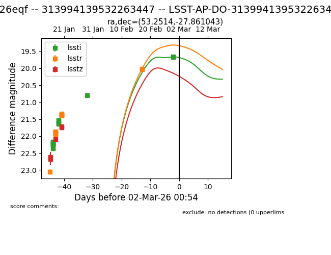
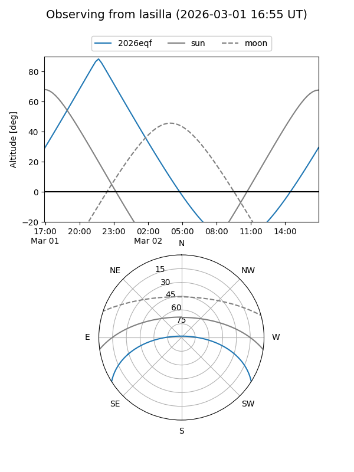
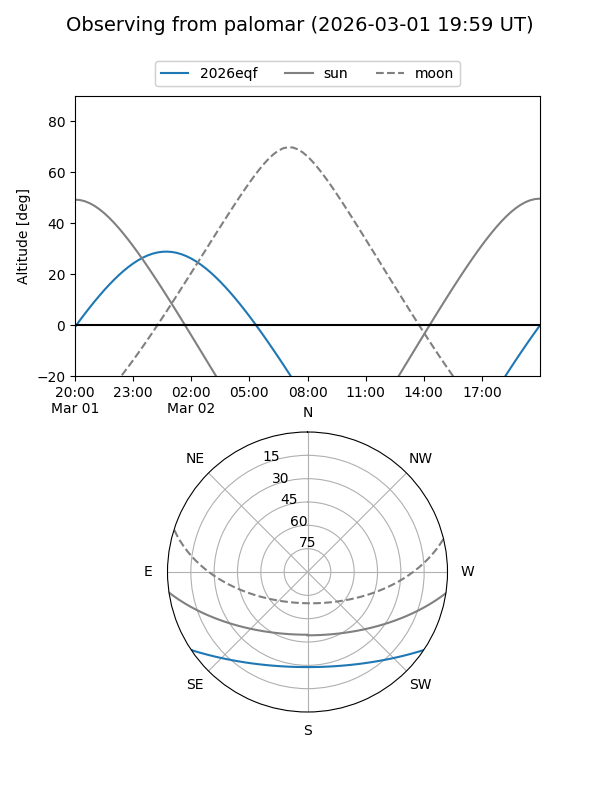

2026eqf
Target 2026eqf at 2026-03-02 00:56
Aliases and brokers:
TNS: link
YSE: link
alt names
LSST-AP-DO-313994139532263447 (lsst)
313994139532263447 (fink_lsst)
2026eqf (tns,yse)
Coordinates:
equatorial (ra, dec) = 53.2514,-27.86104
equatorial (HMS+DMS) = 03:33:00.33,-27:51:39.75
galactic (l, b) = (223.6930,-54.32746)
Flags:
Photometry:
last lssti=19.67, lsstr=20.03, lsstz=21.74
17 lssti, 15 lsstr, 5 lsstz detections
Lightcurve

Visibility


Additional plots